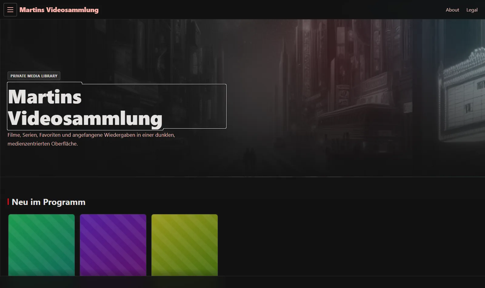
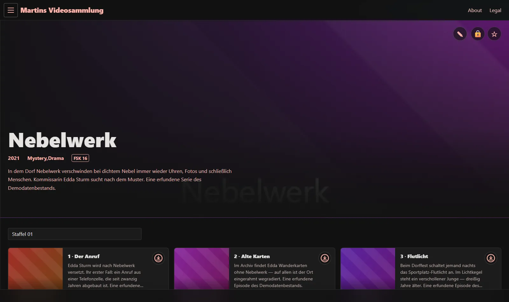
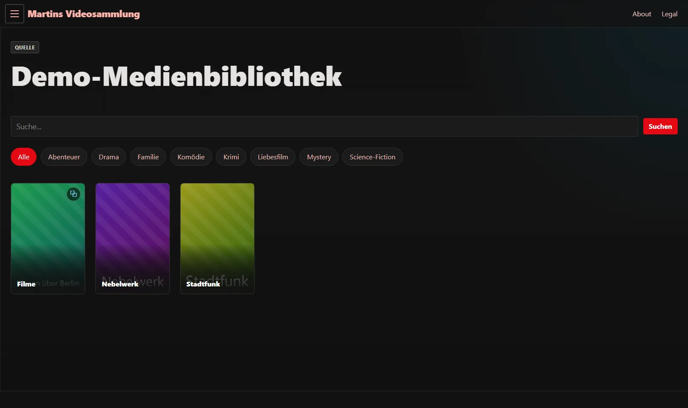
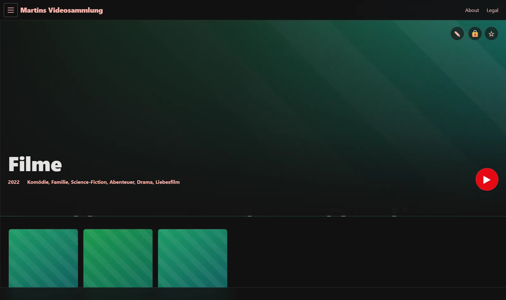
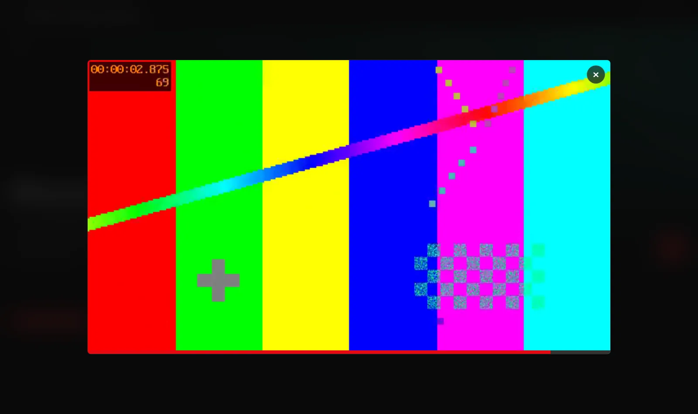

Medienbibliothek
Filme, Serien, Staffeln und Episoden aus lokalen Verzeichnissen oder SFTP-Quellen einlesen — mit NFO-Metadaten, Postern, Bannern und Altersfreigaben.
Deine Videobibliothek — selbst gehostet, im Browser.
VideoWebPlayer ist eine ASP.NET-Core-/Blazor-Anwendung, mit der du deine eigene Film- und Seriensammlung privat verwaltest und im Browser abspielst — ganz ohne Cloud-Dienst und ohne Abo. Scanne deine Medienquellen, pflege Metadaten und schaue auf jedem Gerät im Heimnetz.
Filme, Serien, Staffeln und Episoden aus lokalen Verzeichnissen oder SFTP-Quellen einlesen — mit NFO-Metadaten, Postern, Bannern und Altersfreigaben.
Direktes Streaming im Browser mit Fortschrittsverfolgung: Weiterschauen-Positionen und Gesehen-Kennzeichen werden pro Benutzer gespeichert.
Ein automatisierter TV-Sender bespielt einen gemeinsamen HLS-Live-Stream aus deiner Bibliothek — mit Sendeplanung, Jugendschutzfenstern und Programmvorschau.
Eigene Playlists mit Coverbildern, Drag-&-Drop-Sortierung und optionalem öffentlichem Teilen — inklusive Weiterschauen-Integration.
Geräte per QR-Code oder Einmal-Pairing-Code koppeln; der Server wird im Heimnetz automatisch per mDNS gefunden — ohne Adresseingabe.
Vollständige Backups (auch sehr große Archive per Chunk-Upload), strukturierte Programmupdates und granulare Benutzer- und Freigabeverwaltung.
Echte Einblicke aus der Demoinstallation — so sieht VideoWebPlayer im Betrieb aus.





Die jeweils aktuelle Version für Windows und Linux findest du auf der Releases-Übersicht im GitHub-Repository.
Zu den Releases